内容要点
这组截图其实是同一条认知链上的四段课：先在倒影里拆「明度怎么被重组」；再给出可操作的明度九调坐标系；再用鲁昂大教堂近 30 幅样本验证「时辰」如何同时改明度、对比与色相；最后把技术收束成观看方式——进步不是给手加动作，而是给自己加新的看见层次。
亮部被压低；暗部不必完全抬高；明度跨度整体收窄；保留结构关系不复制数值；距离越远关系越松。
口诀：亮度管整体，对比管层次。横向收窄对比（区间变窄、位置不变）；纵向平移亮度（宽度不变、对比不变）。
明度先升后降；对比更跟「光线是否明确」；色相沿冷→暖轨迹推进。阴天特例：低长调——暗不等于平。
观察（信息）→理解（关系）→感知（感受）→审美（自己）；真正进步是同一世界看见更多层次。
莫奈画的倒影与教堂，不是在复制倒置世界或建筑本身，而是在重新组织进入画面后的视觉关系：明度气氛、明暗跨度、冷暖轨迹一起动。学画时先问「明度结构还在吗」，再谈颜色。
专题一水·三部曲③：把莫奈的倒影调灰后发现 5 个明度规律
系列定位：水 · 三部曲 ③ 析水 · 明度（前两篇分别看颜色与笔触画倒影）。封面用原画 / 灰度对照，强调先剥掉色相干扰，只看明度结构。
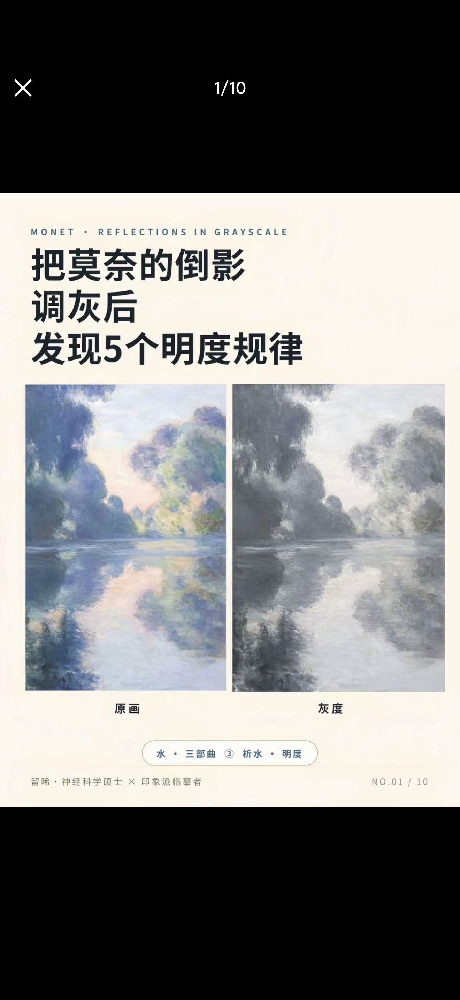
开篇钩子：颜色都对上了，还是差一口气——差的这口气，多半在「明度」上。这次只问一件事：倒影里的明度，到底发生了什么变化？
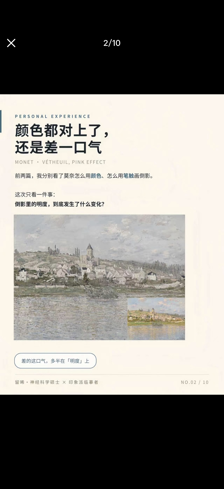
发现 0：倒影不是把原物「翻」进水里
最直接的画法是把岸上景物翻下来；但原画调灰后会发现：倒影和原物并不完全对应。它没有复制明度，而是重新组织了一套关系。
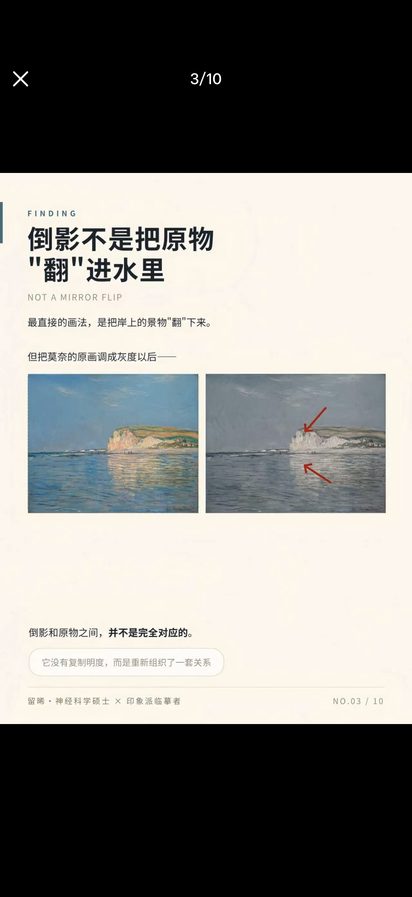
规律 1：亮的东西进了水里，往往没那么亮了
天空本身较亮，到了水中会明显变灰；岸上亮部（如悬崖）进入水面后同样留不住原来的亮度。水面不是一面完美的镜子。
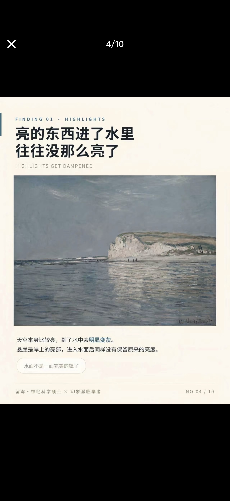
规律 2：但暗部，不一定跟着变亮
若以为「亮部被压低 → 暗部就会被抬起」，会被《塞纳河晨雾》一类作品打脸：近处深色树木的倒影仍可保持非常深，甚至比本体还深。反例本身就是内容价值。
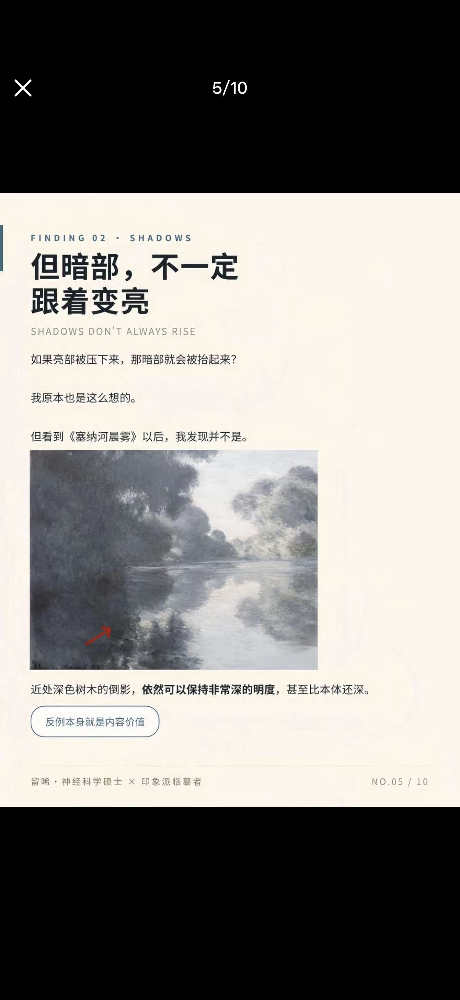
规律 3：真正被压缩的是明度跨度
亮的被压下来，暗的部分向中间收——倒影不是简单地「更灰」，而是明度范围更容易向中间收拢（本体跨度宽，倒影跨度窄）。
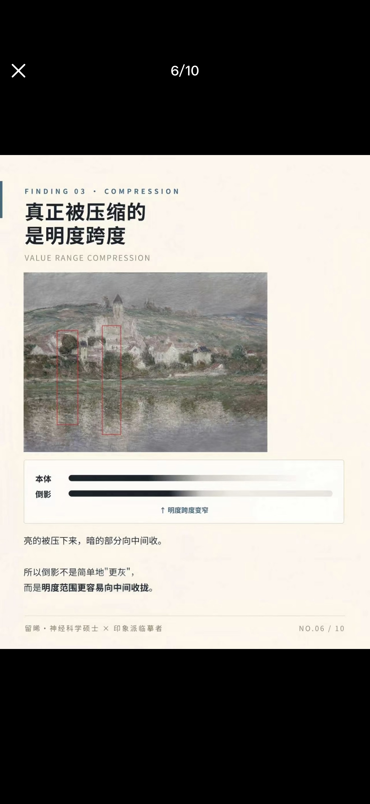
规律 4：保留「明度结构」，不复制「明度数值」
进入水面后绝对明度变了，但暗 / 亮 / 灰的层级关系还在。和笔触课同构：形状上保留结构、打破轮廓；明度上保留关系、压缩跨度。颜色 → 笔触 → 明度，说的是同一件事。
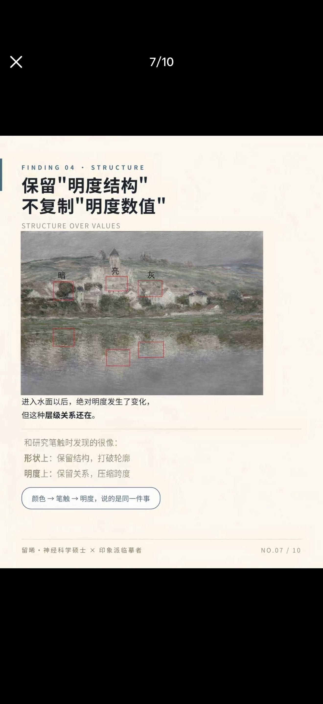
规律 5：越远，关系越容易松
近处：明暗更明显，深色可保持较深，形状与笔触信息更多。远处：明暗差异缩小，边缘和形状一起变松。倒影已是一层压缩；距离与雾气可能进一步削弱。
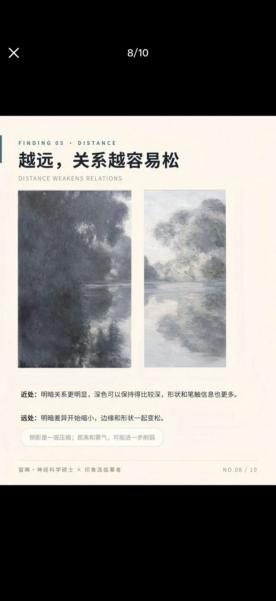
五条规律清单 + 收束
- 亮部被压低：原物高明度进入水面后通常下降。
- 暗部不必完全抬高：关键深色倒影仍可足够深。
- 明度跨度整体收窄：亮不那么亮，暗也不必原样复制。
- 明度关系仍然保留：保留结构关系，不复制绝对数值。
- 距离越远，关系越容易弱化：空间、空气与雾气让明暗更整体。
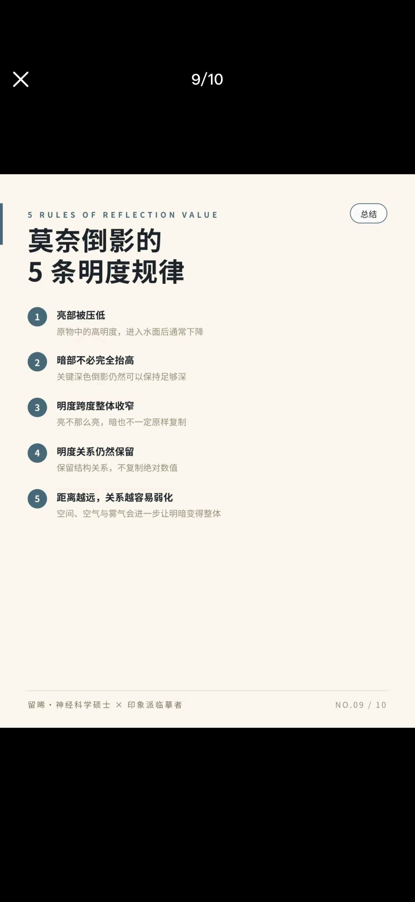
核心句
莫奈画的倒影，不是在复制一个倒过来的世界，而是在重新组织水面上的视觉关系。下次画倒影，先别急着找颜色；先问：这里的明度结构，还在吗？
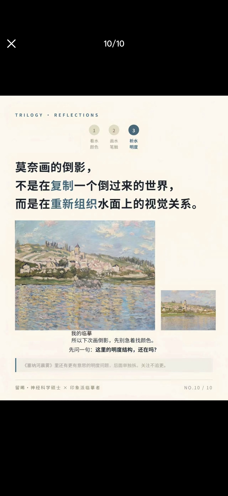
专题二明度九调：一张图记住亮度 × 对比
口诀：亮度管整体，对比管层次。亮度（高 / 中 / 低）管大脑第一印象是「提亮」还是「下沉」；对比（长 / 中 / 短）管眼睛能读到多少层次密度。
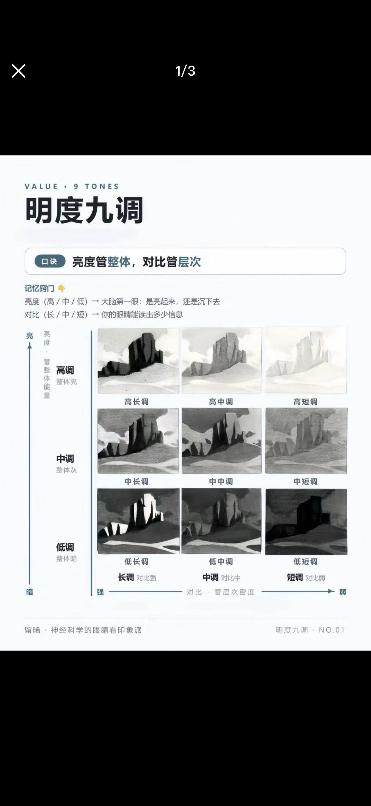
横向变化 · 对比（同一亮度下收窄明度差）
横向走的本质：最亮点与最暗点彼此靠近——区间收窄，位置（整体亮度）不变。
- 高调行：灰与暗逐渐被抬亮，最重的黑变灰，画面收进亮区。
- 中调行：两端向中间聚拢，明度差逐步收窄。
- 低调行：灰与亮逐渐被压暗，只留少量光作视觉锚点。
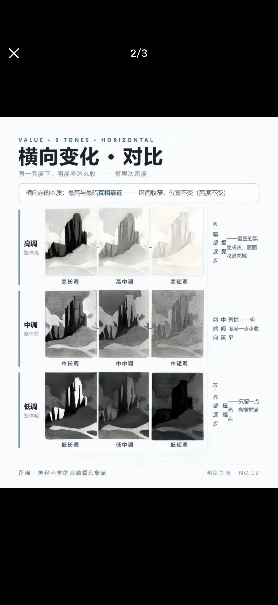
纵向变化 · 亮度（同一对比下平移整体明度）
纵向走的本质：整个明度区间平行移动——宽度不变，对比不变；整体能量可上浮或下沉。
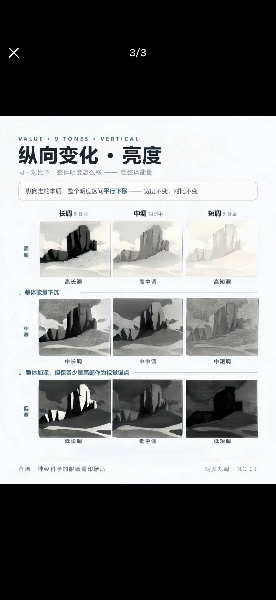
笔记正文要点
读图法：横向 = 对比变（区间收窄、位置不变）；纵向 = 亮度变（区间平移、宽度不变）。莫奈《鲁昂大教堂》画同一座教堂三十余次，变的不是建筑，是光线落入不同「明度区」。画不出层次时，先问：是亮度错了，还是对比没拉开？
专题三莫奈到底在用什么，区分清晨、正午、日落？
方法：纳入《鲁昂大教堂》系列近 30 幅 → 画面调灰去掉色相干扰 → 按高/中/低 × 长/中/短归入九宫。判断含主观性；结论为样本中的一般规律。
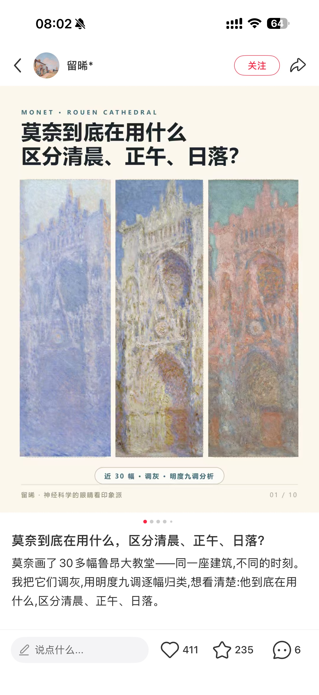
发现① 明度：一天的光先升高，再下降
清晨多数落在中调；正午多数高调；日落回到中调并出现低调倾向。莫奈不是只用「不同颜色」告诉我们时间变了——他连明度气氛也一起改变了。
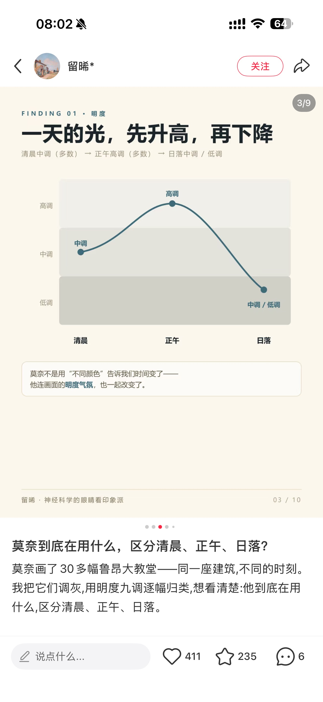
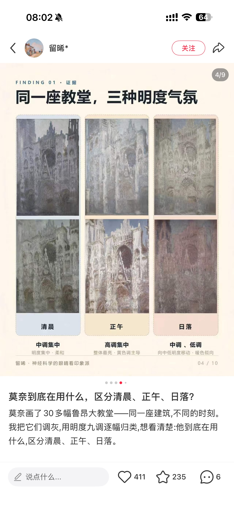
发现② 对比：光线越明确，明暗越容易被拉开
- 清晨：柔光、空气感强；中长调 / 中短调；明暗收在中间，形体融进空气。
- 正午：明确光、边界清晰；高长调、高中调开始出现；亮暗拉开，跨度增大。
- 日落：柔光、明度下沉；短调增多，低调开始出现；明暗收窄。
要点：对比不一定跟着「亮不亮」同步走——更受光线是否明确、边界是否清晰影响。
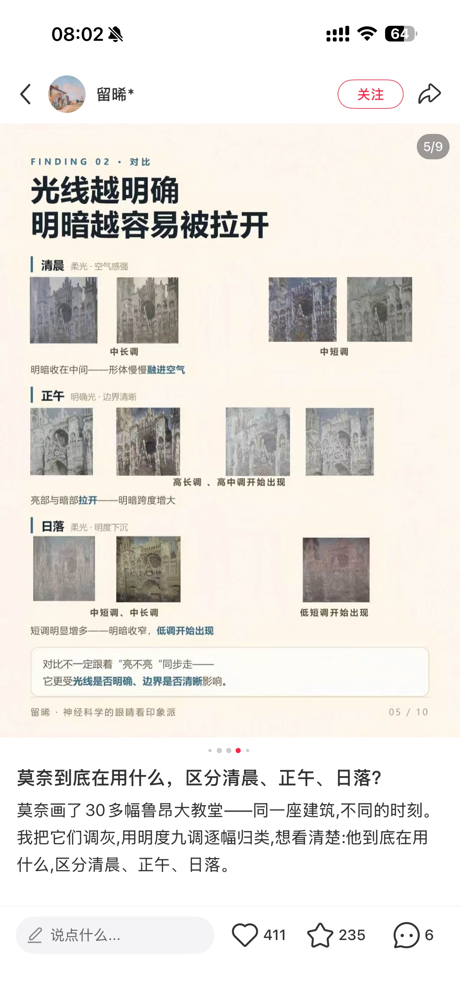
特例：阴天样本里的低长调
画面整体可以很暗，但仍可留住一点很强的光。暗，不等于平——不必把所有明暗关系压平。样本尚少，作后续验证方向。
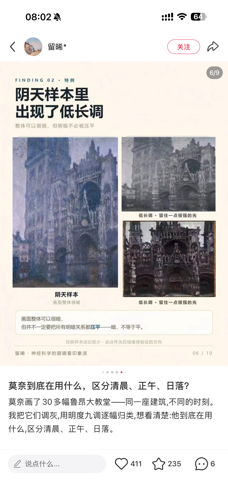
发现③ 色彩：由冷到暖的轨迹
同一条色相轴上，三个时刻各占一段：
- 清晨：雾霭蓝、蓝灰、蓝紫（整体偏冷）
- 正午：米白、金黄、浅金（暖色开始主导）
- 日落：粉橙、暖棕、橙红（暖色推向极致）
莫奈不是把教堂「越画越红」——他同时改变着明度、色相、冷暖与对比。橙红仅在日落阶段出现。
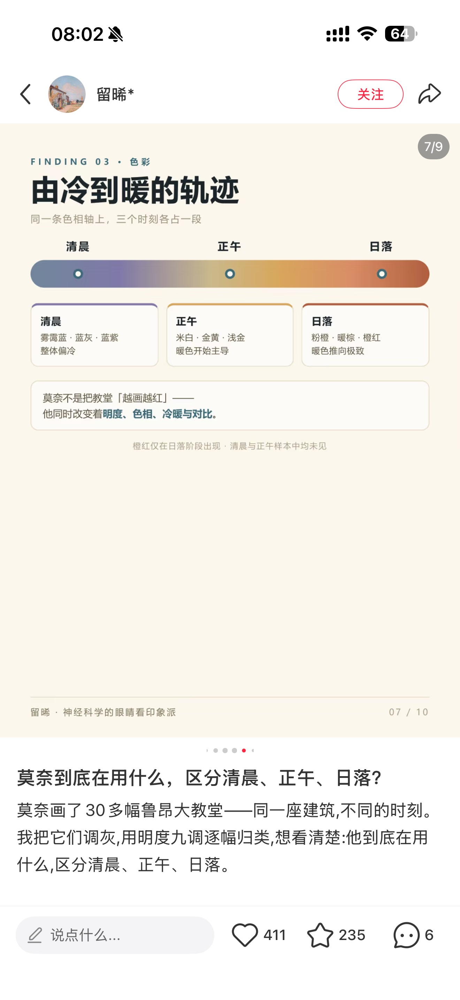
数据附录 + 结语
| 时段 | 九调分布 | 最明显特征 |
|---|---|---|
| 清晨 | 以中调为主，少量高调偏蓝紫；无低调 | 明度集中柔和；蓝灰、蓝紫突出 |
| 正午 | 高调占绝大多数，少量中调；无低调 | 整体最亮；金黄、浅黄、米白主导 |
| 日落 | 以中调为主，低调出现；短调明显增多 | 向中低明度移动；粉橙、金、暖棕增强 |
结语
真正改变的，不是建筑本身——是光线进入画面之后，整个视觉系统被重新组织的方式。
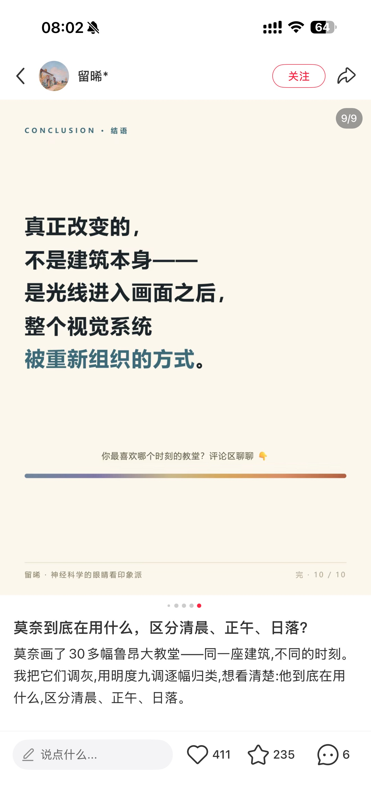
专题四学画画最重要的能力，与画画本身无关
都说要多画、多练、多思考；但画得不好，不一定是练得少——有时是一直用旧方式在看。「不会」常常不是手不会，是大脑还没长出新的观察模型。东西没变，看见的信息变多了；看见变了，手上行为跟着变。绘画进步不是给手增加新动作，而是给自己增加新的观看方式。看见，是分层的。
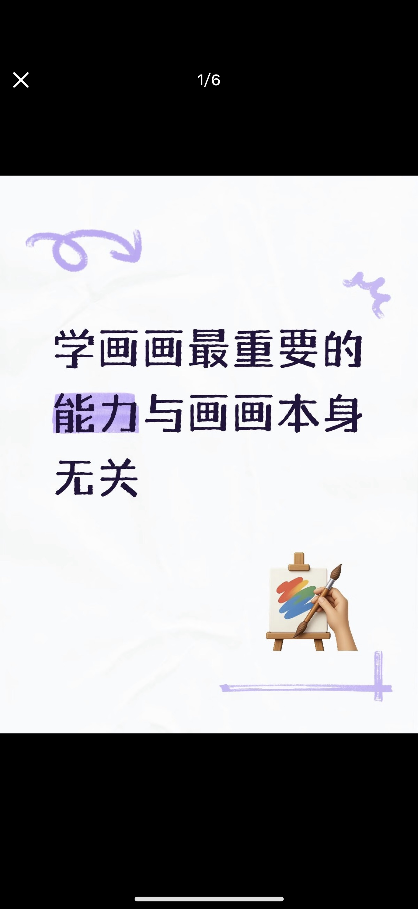
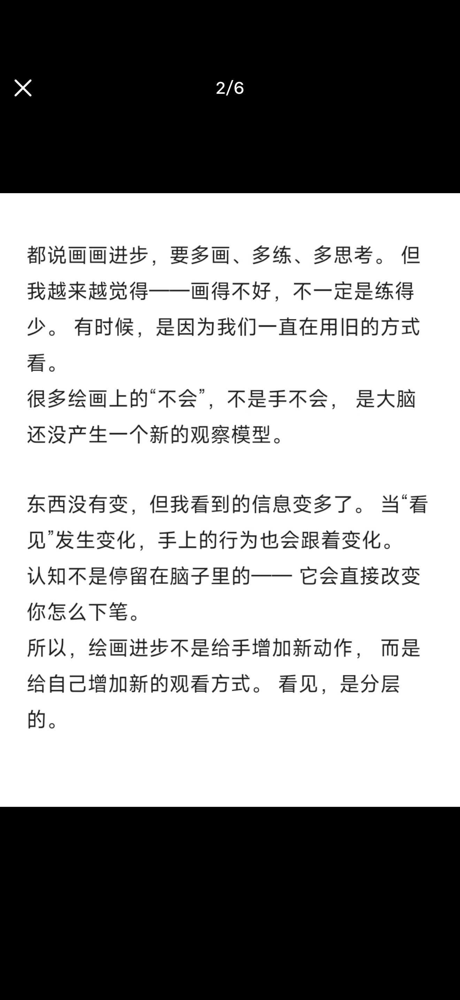
① 观察｜看见信息
用眼睛看：形状、颜色、光影、结构。以前看一棵树，只知道「绿色、树干、树枝、树叶」——这是熟悉的答案，是「它是什么」。
② 理解｜看见关系
用头脑看：光、色彩、空间、空气之间什么关系。光照到哪里？受光面在哪？哪里混进环境色？为什么远处的树偏灰偏蓝？为什么树与天空的边界不总清晰？看见变了，下笔就变——理解空气感后，会降低远处纯度与对比、弱化边缘，让它融进空气。
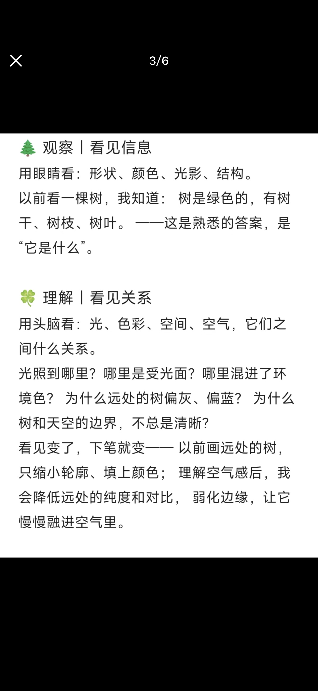
③ 感知｜看见感受
用心看：不再分析，进入画面。草地不只是绿——有阳光的黄、阴影的紫、前后的空间、风吹的节奏。一池水不只是蓝——同时拥有天空、树木、倒影、光线与空气留下的颜色。临摹《睡莲》时，不再执着一片叶子的形状，而是感受水面流动、光线温度、空气湿润——那一刻不是在「画它」，而是试着进入它。
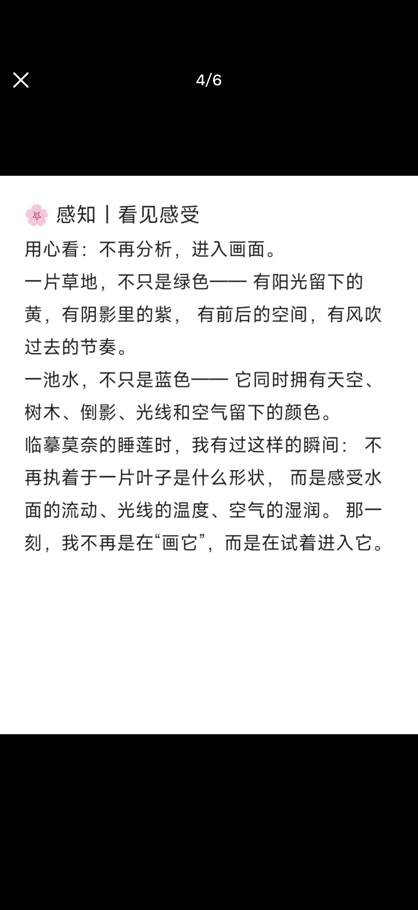
④ 审美｜看见自己
观察、理解、感知内化成本能后，每一次下笔都是审美自然流露。同一棵树，不同人画出完全不同的样子——到最后画的不是树，是你看世界的方式。莫奈晚期睡莲仿佛自己变成一株睡莲：感知走到极致，就成了审美本身。
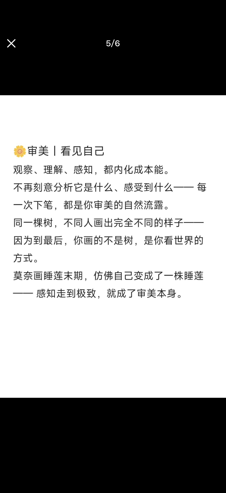
收束三句
- 绘画进步，不是给手增加新动作，是给自己增加新的观看方式。
- 真正的进步，不是我会画更多东西，而是同一个世界，我开始看见更多层次。
- 手可以练出来，但「看见」需要时间。等同一棵树，在你眼里慢慢长出新的层次。
附印象派不是在画物体（片段）
文件夹中另有一篇「同一幅画隔两年，发现自己以前没学会『看』」的轮播，目前仅保留到其中一页（约 6/8）。完整原则摘录如下，与全文「关系 / 光线 / 笔触」母题一致：
- 画关系，不画物体：前景清楚、背景模糊；关系清楚，不要执着于物体本身。
- 画光线，不画颜色：光是物体颜色的来源；光变则色变。
- 笔触是语言：大小、方向、形状服务整体节奏；不同笔触传达不同情绪。
素材缺口说明
IMG_6026、IMG_6027 不在文件夹中；「隔两年再临摹」全文其余页亦缺失。本专题已收录现有全部 32 张截图；若后续补图，可续写临摹对照章节。
附录原始截图清单
按文件名顺序，全部纳入专题（JPG 由原 PNG 压缩导出）：
- 5999–6009：倒影明度五律（10 页）
- 6010–6014：明度九调（含横向/纵向与正文）
- 6015–6024：鲁昂大教堂时辰分析（含附录表与长文收束）
- 6025：印象派三原则片段
- 6028–6033：观看四层（6 页）